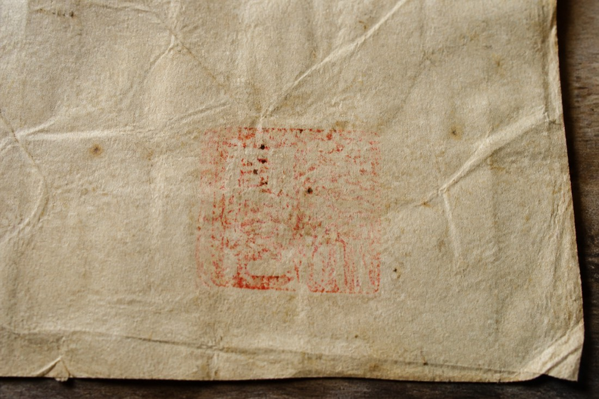

Sishu — copy
The man who established the heir, Geng Shouren, is deceased. Branch-head Geng Bochuan wrote in his place. Because incense cannot break, and following the mingji rule, Geng Xiaoman is set as Shouren’s heir. Xiaoman is a grandson of the Shouli branch. Generation rank matches. Same surname, same lineage. From the day this is written, seasonal offerings fall to Xiaoman, and the leftover back-yard room is to be watched as heir property.
Witnesses: Geng Bochuan. Birth branch: Geng Shouli. Shouli marked the paper, said he was willing. Writer’s side note: Suqiu’s finger-stamp is pale, off in a corner. The two characters “known” were not written separately.
Dated: 2026-05-19. Mourning hall set in the main room at 17 Zaoshu Lane. Paper is red. Ink is what was left in the slab. In July the genealogy office sent someone to copy, said xiupu needs the original. Original still locked in the cabinet. This page is the words after a photograph.
| Column | Written | Side note |
|---|---|---|
| Heir | Geng Xiaoman | Age not written. |
| Day | May 19 | Shouren died on the 18th. This is after death. |
| Residence | Should enter the heir house | No day written for the move. |
Custody takes paper. It does not check whether anyone slept in that bed. For hukou, go to the hukou desk yourself. For the line they later patched into the book, ask that Jiangzuo company.
Cabinet key is in Bochuan’s hand. Director wrote in pencil on the copy verso: original stitching not opened; three photographs; characters match the paper in the cabinet. Whether a stroke was added later, this office does not authenticate. There is no instrument.
Copy Witness column, full note Finger-ink note Back to night desk